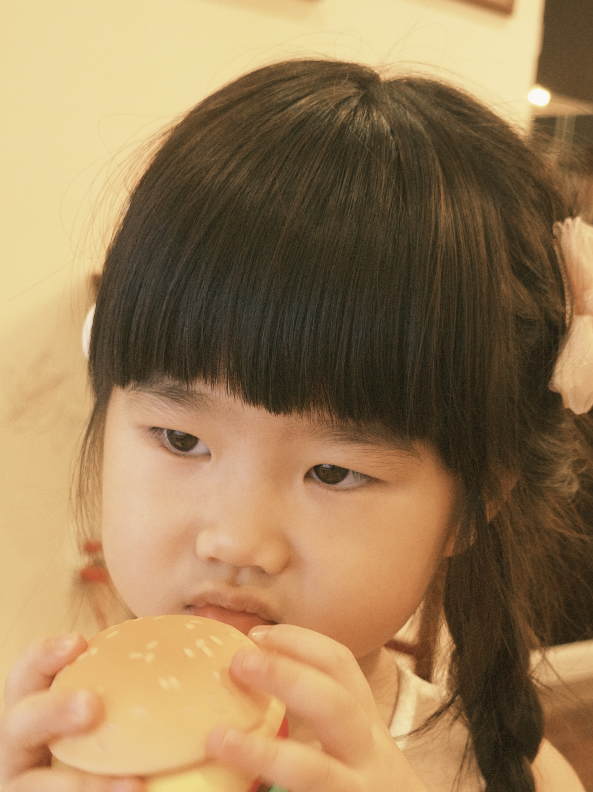
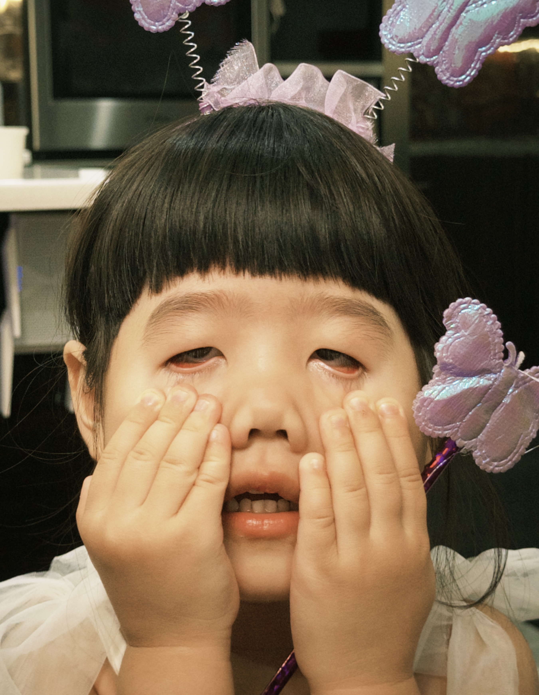

MIDORI
An Archive of my 3-Year-Old Niece



MIDORI is a personal collection of photographs documenting my niece through her expressions, gestures, and everyday moments.
As someone who was raised by my older sister, photographing her daughter has become a way of reflecting on my own childhood, the passage of time, and the changing meaning of family.
Through 52 photographs paired with fragments of poetry and personal reflections, this archive explores the emotions children express before they have the words to explain them.
More than a collection of her childhood, MIDORI is also a reflection of my own.